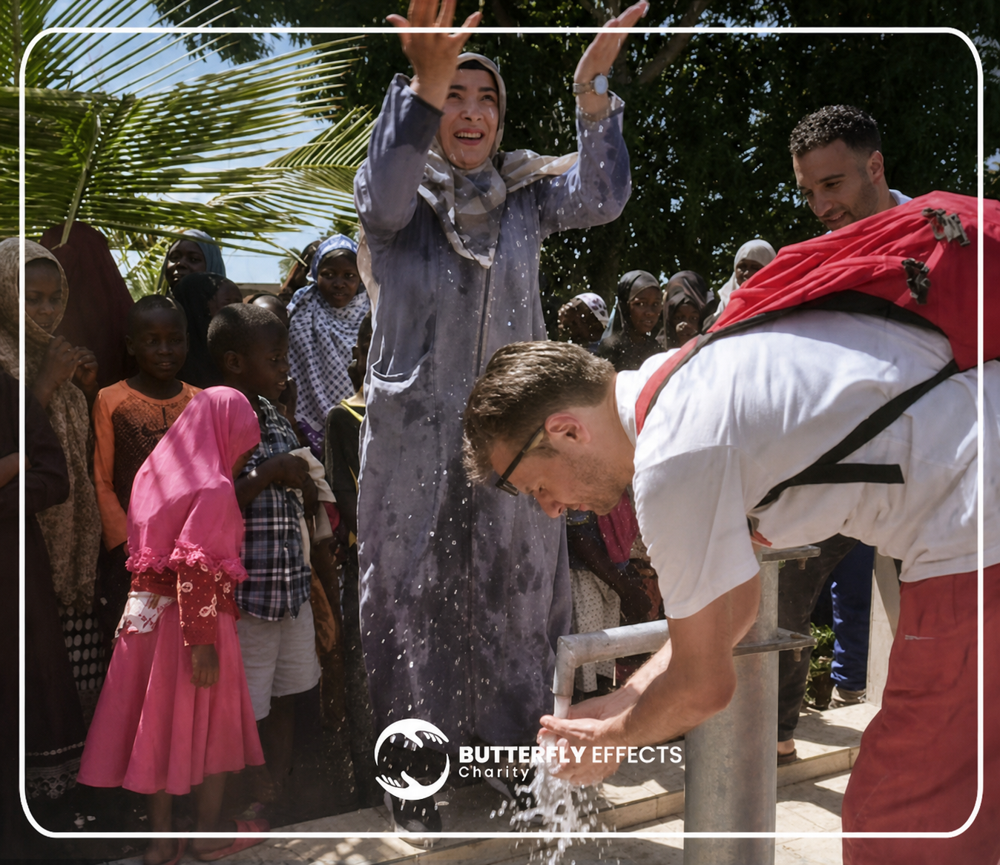

Ziel klären
Schwerpunkt, Umfang und gewünschte Wirkung abstimmen.
Unternehmenspartnerschaft
Unternehmen können Projekte finanzieren, Sachleistungen bereitstellen oder Mitarbeitende für Engagement mobilisieren.

Glaubwürdiges Engagement braucht ein Projekt, das zum Unternehmen passt, klare Zuständigkeiten und nachvollziehbare Berichte.
Schwerpunkt, Umfang und gewünschte Wirkung abstimmen.
Passenden Hilfsbereich und realistischen Rahmen festlegen.
Zuständigkeiten und Kommunikation verbindlich organisieren.
Ergebnisse nachvollziehbar für beide Seiten dokumentieren.